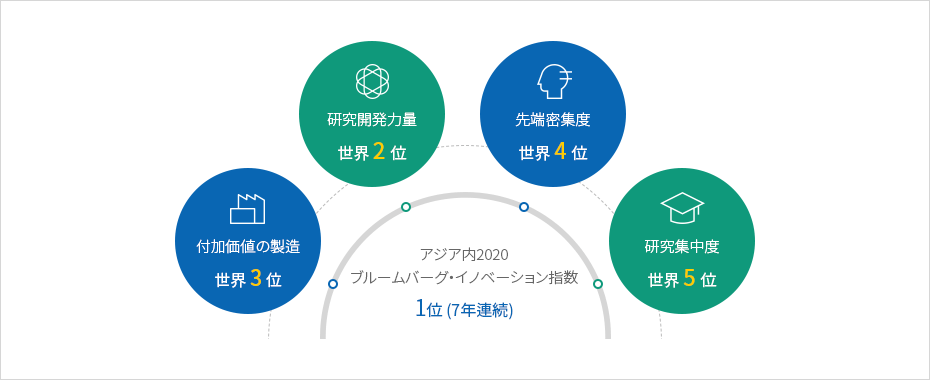
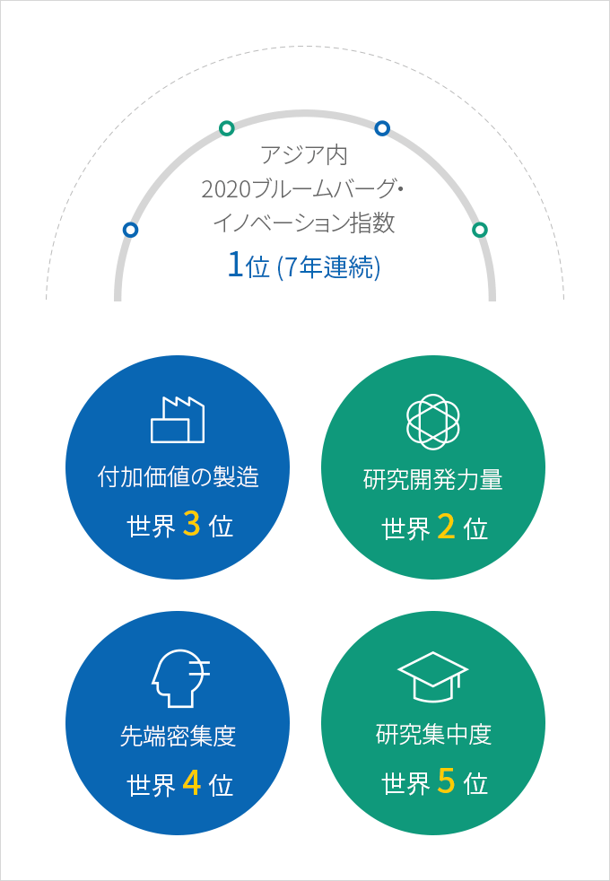
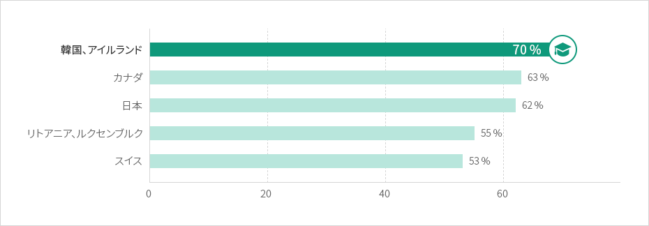
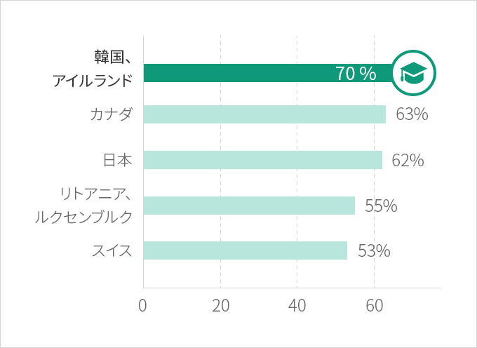

革新
- Home
- Why KOREA
- インフラ
- 革新
アジア最高の革新国家
韓国はブルームバーグ・イノベーション指数において7年連続アジア1位を占めている革新的な国であり、2020年現在は世界2位を記録している。
研究開発の力量、付加価値の創出、ハイテク企業の集中度、研究集中度でいずれも上位5位内に入っており、このような革新インフラは数多くのグローバル企業が韓国に投資する主な要因となっている。
研究開発の力量、付加価値の創出、ハイテク企業の集中度、研究集中度でいずれも上位5位内に入っており、このような革新インフラは数多くのグローバル企業が韓国に投資する主な要因となっている。



アジア内2020ブルームバーグ・イノベーション指数 1位(7年連続)
- 付加価値の製造(世界 3位)
- 研究開発力量(世界 2位)
- 先端密集度（世界 4位）
- 研究集中度(世界 5位)

※ 出所 Bloomberg (January 2020)
革新のDNAを持つ高級人材
韓国がこの半世紀の間、飛躍的な経済成長を成し遂げた背景には韓国人特有の誠実さ、責任感、柔軟性がある。
若者層の大学教育履修率はOECD加盟国の中で最も高い数値となっている。
韓国の最も重要な資源はほかならぬ「人」であり、これを通じて韓国に革新が持続されているといえる。
25～34歳における大卒者の割合 OECD上位5ヵ国
若者層の大学教育履修率はOECD加盟国の中で最も高い数値となっている。
韓国の最も重要な資源はほかならぬ「人」であり、これを通じて韓国に革新が持続されているといえる。



※ 出所：OECD、Education at a glance 2020（2020.09.08)